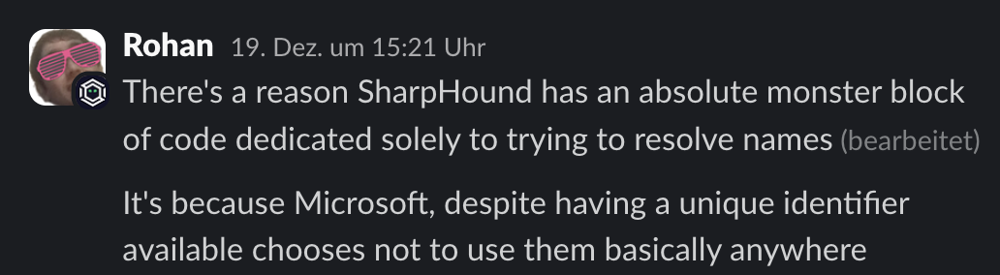
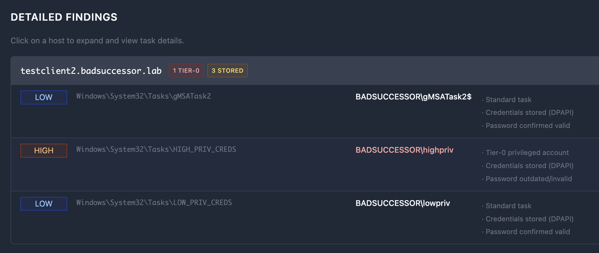
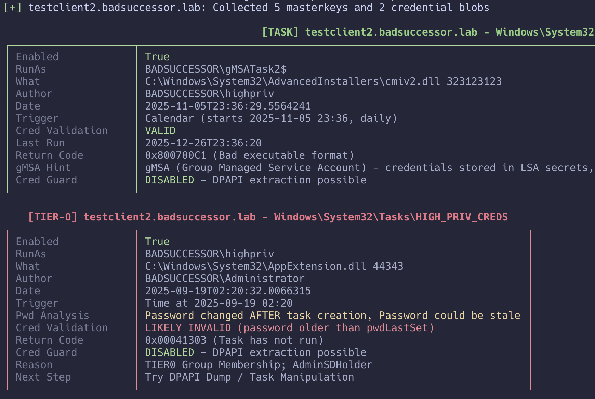

mod it 'til it breaks: taskhound 1.1.0 and the art of feature creep
EDIT (January 3rd 2026)
So, uh, turns out my understanding of Windows Task Scheduler credential validation was... wrong. Spectacularly wrong. The credential validation section below has been updated. Long story short: I assumed Windows would record authentication failures. It doesn't. It just silently ignores them. The task doesn't run, and LastRunInfo stays unchanged from the last successful execution. Which means all those fancy return codes I was so proud of interpreting? You'll basically never see them via RPC. See the updated section for the actual heuristics we're using now. My bad.
# TL;DR
Around three months ago, I released TaskHound with the bold claim that it would make hunting for privileged scheduled tasks less painful. Plot twist: I was wrong. It was still painful. Just differently. So I did what any reasonable person would do: locked myself in a room with too much caffeine, gave Copilot my wallet (bad decision), and rebuilt it into “TaskHound, but (maybe) actually useful this time.” This post is about what went wrong, what changed, and how something as boring as "name/identity resolution" resulted in severe gravitational anomalies in my basement that caused my keyboard to "fall" against the wall (multiple times).
## previously on taskhound...
If you haven't read the original blog post, here's the quick recap: TaskHound is a tool that hunts for Windows scheduled tasks running with privileged accounts and stored credentials. It connects via SMB, grabs task XMLs, parses them, and identifies high-value targets through BloodHound integration. The original version worked. Mostly. In lab environments. When the stars aligned.

As soon as the tool touched a production environment (you know, one that wasn't lovingly handcrafted in my home lab) it immediately nosedived and refused to work. Edge cases kept piling up and it turned out that real environments have this annoying habit of being... well, real:
- Scale: Scanning 500+ hosts one by one? That's not a pentest, that's a meditation retreat.
- Authentication: Different credentials for different hosts? Rotating LAPS passwords? Hope you enjoy copy-pasting passwords while crying.
- Is this password even valid?: Finding a task with stored credentials is great. Having
pwdlastsetas the only indicator of it being valid? Less great. - Resolving SIDs and names across domains?: Hah. That's a good one. More on that later.
So I did what any maniac would do: I collected live data and feedback and then locked myself away for way too long, burned through my entire copilot budget to rewrite half the tool, added a dozen new features, and introduced so many CLI flags that the help output now requires scrolling. Seriously, if you can use TaskHound right now you can probably fly the goddamn starship enterprise. I'm aware of this and it's already on the roadmap.
## the feature bonanza
Let's dive into what's new. Grab a coffee. Or two. This is going to be a ride.
### where it all started: identity resolution is awful
Let's take a moment to admire Microsoft's commitment to chaos. They have a perfectly good globally unique identifier, the SID, and instead of using it everywhere, they just decided not to. Repeatedly. With confidence.

In scheduled task XMLs alone, there are five documented ways to specify a UserId:
| # | Format | Example |
|---|---|---|
| 1 | NetBIOS or FQDN domain\username | CORP\svc_backup |
| 2 | User Principal Name (UPN) | user@domain.local |
| 3 | Local account | .\localadmin |
| 4 | Built-in service account | LOCAL SYSTEM, NETWORK SERVICE, LOCAL SERVICE |
| 5 | Raw SID string | S-1-5-21-... |
Want to guess which one is most common?
Hint: it is not the SID. Because of course it isn't. Because that would actually make sense.
This turns name and identity resolution into one of the most annoying parts of the original version of the tool. You find a task running as EXDOM01\svc_inet and have absolutely no idea if that is a privileged account or not. You cannot even be sure it is referencing an account in your own domain if the admins decided to get creative with the NETBIOS domain name.
If the task stored the SID, we could just map it directly to BloodHound and move on with our lives. But no. Instead we get NETBIOS\samAccountName, the identity equivalent of "some guy named Steve". Now you have to figure out what EXDOM01 even means, whether you have BloodHound data for it, whether it is your own domain, a trusted domain, or a domain that was decommissioned three centuries ago and someone just forgot to pull the plug. None of this existed in the original version. Yay.
The original code did exactly one LDAP query against the current domain and assumed reality would politely cooperate. Reality did not.
This became painfully obvious in production environments. Tasks running as local accounts still have SIDs, so you happily query BloodHound and LDAP for S-1-5-21-... only to realize it is a machine local account that does not exist in AD at all. Cross domain accounts like CHILD\admin require figuring out what domain CHILD even refers to. And cross forest trusts just add another layer of joy, because those SIDs might not exist in any domain you have data for.
Welcome to the hell I've been through for the past months. Take a seat.
This was the moment I started to understand why so many people before me had the same idea and then just went: "ah, csv files aren't that bad after all."
Because honestly, once you have been burned by this enough times, dumping scheduled tasks into a CSV and calling it a day starts to feel like the healthy life choice. No resolution. No correlation. Just a flat list of whatever string Microsoft decided to shove into the UserId field that day. You squint at it, maybe grep for "admin", nod thoughtfully, and move on. Many existing tools and PowerShell scripts stop exactly there, and after dealing with this mess, I get it. Deeply.
But at this point I had already mass-burned way too much time (and money) on this project to just give up. Sunk cost fallacy? Yes. Stubbornness? Also yes. So, I over-engineered my way out of the problem and built a multi-tier fallback chain. Because if one method fails, why not try four more?
BloodHound (On first run) -> Cache -> LSARPC -> LDAP -> Global Catalog| Tier | Source | Use Case |
|---|---|---|
| 1 | BloodHound | Fastest, no network traffic (if connected) |
| 2 | SQLite Cache | Previously resolved SIDs (persistent across runs) |
| 3 | LSARPC | Direct target query (or DC query that follows the trust chain) |
| 4 | LDAP | Domain controller query |
| 5 | Global Catalog | Cross-domain/forest SIDs |
Each tier tries to resolve the name or the SID. If it fails, move to the next. If it succeeds, cache the result (more on that in a second) and move on. This handles pretty much every scenario I've encountered in the wild (watch me eat my words on that one).
Is it perfect? God no. My original vision was naive: one source of truth for identity correlation, clean mappings, done. Turns out that's impossible when each source gives you different pieces of the puzzle. BloodHound has the privilege relationships but doesn't store NetBIOS domain names (just the FQDN). LDAP has the full identity data but requires knowing which DC to query. Task Scheduler RPC gives you execution history for credential validation, but nothing else. The cache ties it all together (talking about this in a sec), but only after you've already done the legwork. There is no single source. Just a ton of duct tape holding multiple sources together. I've come to terms with that. And you should too. That's why the whole thing is currently being refactored in a separate branch because all of this "elegant multi-tier architecture" somehow became a single 2800+ line file of spaghetti code. Don't ask how. I don't know either.
Anyway. Enough complaining. Despite all of this, it works. And you can customize which sources to use based on your requirements:
# Full resolution (default)
taskhound -u homer -p 'Doh!123' -d corp.local -t target
# No LDAP (BloodHound → Cache → LSARPC only)
# From the Box. LSARPC might instruct the Target to query the DC
taskhound --no-ldap ...
# No RPC (BloodHound → Cache → LDAP → GC only)
taskhound --no-rpc ...
# OPSEC mode (BloodHound → Cache only)
taskhound --opsec ...
# Custom Global Catalog server for cross-forest resolution
taskhound --gc-server 10.0.0.1 ...### sqlite caching: the obvious solution i didn't think of initially
Here's the thing about multi-tier SID resolution: it works great. If you only plan to run the tool once in a lifetime. But when you're scanning 500+ hosts and each host has 10 tasks, and each task references an account, you're suddenly making countless resolution attempts. Many of them for the same SIDs or names.
Without caching, runs against a medium-sized environment were taking 45+ minutes and generating enough LDAP traffic to make the DC sad.

So TaskHound now maintains a cache. A dynamic in-memory cache and a persistent SQLite cache.
+---------------------------------------------------------------------------------+
| CACHE ARCHITECTURE |
+---------------------------------------------------------------------------------+
| |
| +-------------------+ +-----------------------------------------------+ |
| | Worker Thread | | CacheManager | |
| | (scan target) | | +----------------------------------------+ | |
| +---------+---------+ | | Session Cache (in-memory dict) | | |
| | | | +----------------------------------+ | | |
| | cache.get() | | | {"sids:S-1-5-..": "CORP\\admin"} | | | |
| | | | | {"computers:DC01": {...}} | | | |
| v | | +----------------------------------+ | | |
| +-------------------+ | | ^ | | | |
| | 1. Check |<-----+ | RLock | miss | | | |
| | Session Cache | | | (thread- | v | | |
| | (fastest) | | | safe) | +----------+ | | |
| +---------+---------+ | | | | promote | | | |
| | miss | | | | on hit | | | |
| v | +-----------+---+----------+-------------+ | |
| +-------------------+ | | | | |
| | 2. Check | | +-----------+--------------+--------------+ | |
| | Persistent |<-----+ | SQLite (~/.taskhound/cache.db) | | |
| | Cache (SQLite) | | | +--------------------------------------+ | |
| +---------+---------+ | | | TABLE cache | | |
| | miss | | | +-- category TEXT (sids/computers) | | |
| v | | | +-- key TEXT (S-1-5-.../DC01) | | |
| +-------------------+ | | | +-- value JSON (resolved data) | | |
| | 3. Live Query | | | | +-- expires_at INT (unix timestamp) | | |
| | (LDAP/RPC/BH) |------+ | +--------------------------------------+ | |
| +-------------------+ | | | | |
| | | | | WAL mode + per-thread connections| |
| | result | | | (threading.local) | |
| v | | v | |
| +-------------------+ | | +--------------------------------------+ | |
| | cache.set() |------+ | | Thread 1: conn1 --+ | | |
| | (both tiers) | | | | Thread 2: conn2 --+--> Same DB file | | |
| +-------------------+ | | | Thread N: connN --+ (no locks) | | |
| | | +--------------------------------------+ | |
| | +--------------------------------------------+ |
+---------------------------------------------------------------------------------+The cache lives in ~/.taskhound/cache.db with a default TTL of 24 hours. This means:
- SID resolutions are cached across runs
- LAPS credentials are cached (until they rotate)
- Subsequent scans of the same environment are significantly faster
The cache architecture is flat at the moment, meaning there is only one table in the DB called "cache". I know that's not optimal but so far it works well enough for what it's intended to do.
You can control the cache with the following flags:
# Clear the cache before a fresh run
taskhound --clear-cache ...
# Disable caching entirely
taskhound --no-cache ...
# Custom TTL (in seconds)
taskhound --cache-ttl 3600 ...### caching made this possible: multi-threaded scanning
Here's the fun part: once you have proper caching, you can actually parallelize the scanning. Before caching, multi-threading would just mean multiple threads hammering the DC simultaneously for the same result. Not great.
TaskHound now supports parallel scanning with configurable thread counts and rate limiting:
# 20 parallel workers, max 5 targets per second
taskhound -u homer -p 'Doh!123' -d corp.local --auto-targets --threads 20 --rate-limit 5
# Go ham (not recommended for production)
taskhound -u homer -p 'Doh!123' -d corp.local --targets-file hosts.txt --threads 50The implementation uses Python's ThreadPoolExecutor with per-target error isolation, so one failing host doesn't take down the entire scan. Each thread gets its own SMB connection and processes targets independently.
The SQLite cache uses WAL (Write-Ahead Logging) mode and per-thread connections via threading.local(), so concurrent access doesn't cause database locks or corruption. This took a few iterations to get right. Don't ask about the debugging sessions.
What about race conditions with multiple threads writing to the same cache key? Not a problem here. The cache stores deterministic mappings: hostname -> SID, SID -> name, etc. If two threads resolve the same SID simultaneously, they'll write the same value. The data is inherently consistent because these relationships are fixed in Active Directory. If they're NOT consistent? Congrats, you've found a broken domain. IPs are the one exception (they can change), but we have a pragmatic solution for that. We just won't cache those. Oh and there might be the edge case where an admin renames a computer while the scan is running and two distinct threads catch that host just at the right time. Yeah, I'm not going to implement that. If this should happen to you: I owe you a beer.
### auto-target discovery
Here's how target discovery used to work:
- Query LDAP (or BloodHound) for all computer objects
- Export to CSV
- Manually filter out disabled accounts, stale computers, DCs
- Create a text file with hostnames
- Hope you didn't miss anything
Now it's just:
taskhound -u homer -p 'Doh!123' -d corp.local --dc-ip 10.0.0.1 --auto-targetsTaskHound will:
- Query BloodHound (if configured) or fall back to LDAP
- Filter out disabled computer accounts
- Filter out stale computers (inactive >60 days by default)
- Exclude Domain Controllers (usually not what you want)
- Return a nice, clean list of targets
You can customize the filtering:
# Only servers
taskhound --auto-targets --ldap-filter servers
# Only workstations
taskhound --auto-targets --ldap-filter workstations
# Include DCs
taskhound --auto-targets --include-dcs
# Include disabled computers (for some reason)
taskhound --auto-targets --include-disabled
# Custom stale threshold (90 days) or disable (0)
taskhound --auto-targets --stale-threshold 90The data source priority is: BloodHound (if connected) -> LDAP fallback. BloodHound is preferred because it already has enriched data about computer objects, which saves additional LDAP queries.
### typing passwords is for peasants: laps integration
Remember the good old days when you had to manually retrieve LAPS passwords for each host, copy them into your command, and pray you didn't mess up? Yeah, neither do I. I've blocked out those memories.
Here's the thing though: in my recent engagements, compromising a LAPS Reader account has become more common than finding 50 hosts sharing the same local admin password. Security is actually improving!
Therefore, TaskHound now supports automatic LAPS credential retrieval for per-host authentication. It handles:
- Windows LAPS (Both
msLAPS-PasswordandmsLAPS-EncryptedPassword) - Legacy LAPS (
ms-Mcs-AdmPwd)
The workflow is really simple:
# Old way (suffering)
taskhound -u localadmin -p 'RetrievedPassword123!' -d . -t host1.corp.local
# Repeat 500 times with different passwords
# New way (enlightenment)
taskhound -u domain_user -p 'DomainPass!' -d corp.local --targets-file hosts.txt --laps --threads 10Under the hood, TaskHound performs a two-phase connection for each target:
Source: taskhound/laps/query.py, lines 78-145
def query_laps_passwords(
dc_ip: str, domain: str, username: str, password: Optional[str] = None,
hashes: Optional[str] = None, kerberos: bool = False, ...
) -> LAPSCache:
"""Query all LAPS passwords from Active Directory."""
cache = LAPSCache(domain=domain)
ldap_conn = get_ldap_connection(
dc_ip=dc_ip, domain=domain, username=username,
password=password, hashes=hashes, kerberos=kerberos, ...
)
# Build base DN from domain
base_dn = ",".join([f"DC={part}" for part in domain.split(".")])
# LDAP filter: computers with any LAPS attribute populated
ldap_filter = "(&(objectClass=computer)(|(ms-Mcs-AdmPwd=*)(msLAPS-Password=*)(msLAPS-EncryptedPassword=*)))"
# Attributes to retrieve
attributes = [
"sAMAccountName", # Computer name with $ (e.g., "WS01$")
"dNSHostName", # FQDN (e.g., "WS01.domain.local")
"ms-Mcs-AdmPwd", # Legacy LAPS password
"msLAPS-Password", # Windows LAPS (JSON, plaintext)
"msLAPS-EncryptedPassword", # Windows LAPS (DPAPI-NG encrypted)
"msLAPS-PasswordExpirationTime",
]
# Create decryption context for encrypted passwords
decrypt_ctx = LAPSDecryptionContext.from_credentials(
domain=domain, username=username, password=password, ...
)
# Perform search and process results
search_result = ldap_conn.search(
searchBase=base_dn, searchFilter=ldap_filter,
attributes=attributes, sizeLimit=0,
)
for entry in search_result:
cred = _parse_ldap_entry(entry, laps_user_override, decrypt_ctx)
if cred:
cache.add(cred)
# Save to persistent cache for future runs
cache.save_to_persistent_cache()
return cacheThe best part? It also leverages the same SQLite cache, so subsequent runs don't hammer your DC with LDAP queries. Your blue team will thank you. Or at least be slightly less annoyed.
### trust but verify: credential validation
Here's the problem with stored credentials: they might be stale. The old code had exactly one reliable check: if pwdLastChanged from the account running the task was older than the task creation date. Considering how most mature environments handle credential rotation? Unlikely. Passwords rotate, tasks don't get updated, and you're left guessing.
My initial idea was to query WMI for the task's last return code. Workable. But clunky and noisy as hell. Then Claude Opus suggested something I hadn't even considered: just check the Task Scheduler's own execution history. Windows already tracks whether credentials worked. We just need to ask.
TaskHound now queries the Task Scheduler RPC service (SchRpcGetLastRunInfo) to check task execution history. Sounds simple, right? Here's where I screwed up in the original post:
I assumed Windows would record authentication failures.
It doesn't. If a task fails because the password is wrong, the account is locked, or the user lacks batch logon rights... Windows just goes "eh" and doesn't update LastRunInfo. The task silently doesn't run, and the last recorded execution remains whatever succeeded before the credentials went bad. This means:
- You can't tell the difference between "task hasn't triggered yet" and "task is failing every time because credentials are stale"
- All those fancy return codes I documented? You'll basically never see them via RPC
- A task showing
0x0(success) from 6 months ago tells you the password was valid then, not now
So I had to get creative. TaskHound now uses heuristics combining RPC data with AD metadata (pwdLastSet from LDAP/BloodHound) and schedule analysis:
Source: taskhound/smb/task_rpc.py
| Status | Meaning | DPAPI Worth It? |
|---|---|---|
CONFIRMED_VALID |
Password unchanged since task creation AND task ran within expected schedule | Absolutely |
HIGH_CONFIDENCE_VALID |
Password unchanged since task creation, but trigger timing unknown (e.g., boot trigger) | Very likely |
LIKELY_VALID |
Password changed but task ran within schedule (creds updated), OR RPC-only mode with successful execution | Probably |
POSSIBLY_STALE |
Task should have run but hasn't - may indicate stale credentials | Maybe check first |
DEFINITELY_STALE |
Password changed after last successful run - credentials are guaranteed wrong | Don't bother |
UNKNOWN |
Task has never run - cannot determine | Your guess is as good as mine |
The key insight: comparing pwdLastSet from AD against LastRunTime from Task Scheduler tells us if the password changed after the last successful run. If it did? DEFINITELY_STALE. No guessing required.
Without AD data (e.g., --no-ldap and no BloodHound), TaskHound falls back to RPC-only mode. A successful execution within the expected trigger interval returns LIKELY_VALID. Not as confident, but better than nothing.
OPSEC Warning
Credential validation requires connecting to the Task Scheduler RPC service (\pipe\atsvc). This is not stealthy. If you're on a red team engagement where SOC alerts matter, use --no-validate-creds or --opsec.
### credential guard detection:
You know what's worse than finding a scheduled task with stored credentials? Spending an hour on DPAPI extraction only to discover Credential Guard is enabled and your masterkeys are useless.
TaskHound now checks for Credential Guard before you waste your time. It queries the remote registry for LSA protection settings (This was already implemented before but clearly experimental. It should work now. Emphasis on SHOULD)
Source: taskhound/smb/credguard.py, lines 135-185
def check_credential_guard(smb_conn, host) -> Optional[bool]:
"""
Check if Credential Guard is enabled on a remote Windows host.
Checks HKLM\\SYSTEM\\CurrentControlSet\\Control\\Lsa\\LsaCfgFlags == 1
and/or HKLM\\..\\Lsa\\IsolatedUserMode == 1
Automatically starts the RemoteRegistry service if stopped/disabled,
and restores it to the original state afterward.
"""
remote_ops = RemoteRegistryOps(smb_conn, host)
try:
remote_ops.enable_registry()
dce = remote_ops.get_rrp()
# Open HKLM
reg_handle = rrp.hOpenLocalMachine(dce)["phKey"]
# Open LSA key
lsa_path = "SYSTEM\\CurrentControlSet\\Control\\Lsa"
ans = rrp.hBaseRegOpenKey(dce, reg_handle, lsa_path, samDesired=rrp.KEY_READ)
lsa_handle = ans["phkResult"]
# Check LsaCfgFlags
try:
val = rrp.hBaseRegQueryValue(dce, lsa_handle, "LsaCfgFlags")
lsa_cfg_flags = int.from_bytes(val["lpData"], "little")
if lsa_cfg_flags == 1:
return True
except DCERPCException:
pass
# Check IsolatedUserMode
try:
val = rrp.hBaseRegQueryValue(dce, lsa_handle, "IsolatedUserMode")
isolated_user_mode = int.from_bytes(val["lpData"], "little")
if isolated_user_mode == 1:
return True
except DCERPCException:
pass
return False
except Exception:
return None
finally:
remote_ops.finish()EXTREME OPSEC WARNING
Credential Guard detection requires starting the Remote Registry service if it's stopped (which it usually is on modern Windows). This is HIGHLY detectable. Any decent SOC will see this. Use --no-credguard if you care about stealth. You've been warned.
### offline disk analysis
Sometimes all you need is a .vhdx seemingly abandoned in an SMB share. TaskHound now supports mounted disk image analysis. You still have to do the mounting yourself but at least you don't have to copy 2TB worth of thick provisioned disks around.
# Analyze a mounted Windows disk image
taskhound --offline-disk /mnt/evidence
# Override hostname detection
taskhound --offline-disk /mnt/disk --disk-hostname COMPROMISED-PCSource: taskhound/engine/disk_loader.py, lines 22-28 and lines 182-225
# Windows paths relative to system root
TASKS_PATH = "Windows/System32/Tasks"
DPAPI_SYSTEM_PATH = "Windows/System32/Microsoft/Protect/S-1-5-18/User"
SYSTEM_CREDS_PATH = "Windows/System32/config/systemprofile/AppData/Local/Microsoft/Credentials"
GUID_PATTERN = re.compile(
r"^[0-9a-f]{8}-[0-9a-f]{4}-[0-9a-f]{4}-[0-9a-f]{4}-[0-9a-f]{12}$", re.IGNORECASE
)
def extract_masterkeys(windows_root: Path, output_dir: Path, ...) -> int:
"""Extract SYSTEM DPAPI master keys for decrypting task credentials."""
dpapi_source = windows_root / DPAPI_SYSTEM_PATH
masterkeys_dest = output_dir / "masterkeys"
masterkeys_dest.mkdir(parents=True, exist_ok=True)
if not dpapi_source.exists():
# Also check the parent (S-1-5-18) in case User doesn't exist
alt_path = windows_root / "Windows/System32/Microsoft/Protect/S-1-5-18"
if alt_path.exists():
dpapi_source = alt_path
count = 0
for item in dpapi_source.iterdir():
# Only extract GUID-named files (actual masterkey blobs)
if item.is_file() and GUID_PATTERN.match(item.name):
shutil.copy2(item, masterkeys_dest / item.name)
count += 1
elif item.is_file() and item.name.lower() == "preferred":
# Also copy the Preferred file (points to current masterkey)
shutil.copy2(item, masterkeys_dest / item.name)
return countIt will automatically:
- Find the Windows root directory (handles various mount structures)
- Extract the hostname from the SYSTEM registry hive
- Collect scheduled task XMLs
- Grab DPAPI masterkeys and credential blobs
- Extract the DPAPI_SYSTEM key from registry (if possible)
Yes, it also works with read-only mounts. TaskHound copies the necessary registry hives to a temp directory for parsing.
### making it (somewhat) pretty: html reports
Let's be honest: OpenGraph is great and CSV/JSON are nice for further processing but showing C-Level execs a terminal output with ANSI colors or an OpenGraph Screenshot don't exactly scream "professional audit report." TaskHound now generates HTML security reports with severity scoring:
# Generate HTML report
taskhound -u homer -p 'Doh!123' -d corp.local --auto-targets -o html
# Multiple formats
taskhound -u homer -p 'Doh!123' -d corp.local --auto-targets -o plain,json,htmlThe severity matrix is based on account type, stored credentials, and validation status:
Source: taskhound/output/html_report.py, lines 58-75
"""
Severity Matrix:
┌─────────────────────────────────────────────────────────────────────────────┐
│ Account Type │ Stored Creds │ Credential Status │ Severity │
├─────────────────────────────────────────────────────────────────────────────┤
│ TIER-0 │ Yes │ Valid │ CRITICAL │
│ TIER-0 │ Yes │ Outdated/Unconfirmed │ HIGH │
│ TIER-0 │ Yes │ Credential Guard │ HIGH │
│ TIER-0 │ No │ - │ MEDIUM │
│ PRIV │ Yes │ Valid │ HIGH │
│ PRIV │ Yes │ Outdated/Unconfirmed │ MEDIUM │
│ PRIV │ Yes │ Credential Guard │ MEDIUM │
│ PRIV │ No │ - │ LOW │
│ TASK │ Yes │ Any │ LOW │
│ TASK │ No │ - │ INFO │
│ FAILURE │ - │ - │ INFO │
└─────────────────────────────────────────────────────────────────────────────┘
"""The HTML report includes filtering, severity badges, and is suitable for management reports and audit documentation. It's not going to win any design awards, but it's functional and doesn't require explaining what [TIER-0] means in a terminal.
Here's what the detail section looks like. There's a bunch of other things but I'd suggest you generate one yourself as this would definitely be too long to include here.

### keeping it minimal: opsec mode
Red team engagements have different requirements than security audits. I don't need to tell you that. Sometimes you can't afford to light up the SOC like a Christmas tree.
TaskHound's default behavior is intentionally noisy. All features enabled for maximum visibility. But with --opsec, you get a "stealth" mode:
# OPSEC mode enables all stealth flags at once
taskhound -u homer -p 'Doh!123' -d corp.local -t target --opsec
# Equivalent to:
taskhound --no-ldap --no-rpc --no-loot --no-credguard --no-validate-creds| Protocol | Operations | Flag to Disable |
|---|---|---|
| SMB | Task enumeration (always used) | N/A - Required |
| LDAP(S)/GC | SID resolution, Tier-0 detection, pwdLastSet | --no-ldap |
| LSARPC | Fallback SID resolution | --no-rpc |
| Remote Registry | Credential Guard detection | --no-credguard |
| Task Scheduler RPC | Credential validation | --no-validate-creds |
The SID resolution chain also adapts to OPSEC mode.
Pro tip: Pre-populate BloodHound with domain data before your engagement. Then use --opsec with --bh-live. You get high-value target detection and SID resolution without generating any additional network traffic beyond the SMB connection (Given your BloodHound Instance runs locally).
### flags are getting out of hand: configuration files
I'll be the first to admit: the CLI has grown extensive. At some point, typing taskhound --bh-live --bhce --bh-connector http://127.0.0.1:8080 --bh-api-key ... --bh-api-key-id ... --laps --threads 10 --rate-limit 5 ... becomes an exercise in resilience.
That's why TaskHound now supports TOML configuration files:
# ~/.config/taskhound/taskhound.toml or ./taskhound.toml
[authentication]
username = "svc_taskhound"
domain = "CORP.LOCAL"
[target]
dc_ip = "10.0.0.1"
threads = 10
timeout = 30
[bloodhound]
live = true
connector = "http://127.0.0.1:8080"
api_key = "${BH_API_KEY}" # Environment variable expansion!
api_key_id = "${BH_API_KEY_ID}"
type = "bhce"
[bloodhound.opengraph]
enabled = true
output_dir = "./opengraph"
[laps]
enabled = true
[cache]
enabled = true
ttl = 86400 # 24 hoursPriority order: CLI args > Environment variables > Local config (./taskhound.toml) > User config (~/.config/taskhound/taskhound.toml) > Defaults
Now you can just run:
taskhound --auto-targetsAnd everything else comes from the config file. Much better. But there's still headroom. I'll get to that later.
### pretty panels everywhere!
The output has been completely redesigned using Rich for colored tables, progress indicators, and nicely formatted panels. Here's what a typical run looks like now (roughly):

The output now shows:
- Progress bar with ETA for multi-target scans
- Credential validation status
- Credential Guard detection results
- LAPS usage statistics
- Scan statistics with failure breakdown
- Summary table per host
## what's still broken (i still blame copilot)
I'd love to tell you TaskHound is perfect now. But that would be a lie. So here's what's up next:
### the behemoth cli
The number of CLI flags has grown to the point where the help output requires dedicated reading time. I'm aware. A refactor into modular stages with sensible presets is on the roadmap. For now, use config files to preserve your sanity.
### gMSA accounts
Group Managed Service Accounts (gMSA) detection has improved with samaccountname-based queries, but there are still edge cases where gMSA tasks aren't properly identified. If you're dealing with a lot of gMSA-based scheduled tasks, expect some manual verification.
## What's next?
The following items are actively being worked on (when caffeine permits):
### definitely happening
- Stage Modularization: Break the CLI into logical stages (warmup, collect, enrich, etc.) with sensible defaults
- Abuse Info Integration: Add MITRE ATT&CK techniques to BloodHound nodes
- Custom Tier-0 Mappings: Support for user-defined privilege zones in BHCE
### might happen if I find time
- Integration with Other C2s: Beyond AdaptixC2/CobaltStrike
- *NIX Mode: Because Windows isn't the only OS storing tasks.
## the thankyou section:
This update wouldn't have been possible without:
- Everyone who provided feedback on Discord or GitHub
- The folks who sent DMs with feature requests
- NetExec for LAPS implementation inspiration
- dpapi-ng for making encrypted LAPS decryption possible
- The absolute beasts from SpecterOps! Not only for OpenGraph itself, but for the constant and instant support in the BloodHound Gang Slack
- Caffeine. Lots of caffeine.
## outro
Still no fancy outro. Sorry guys. I'm still figuring out a catchphrase.